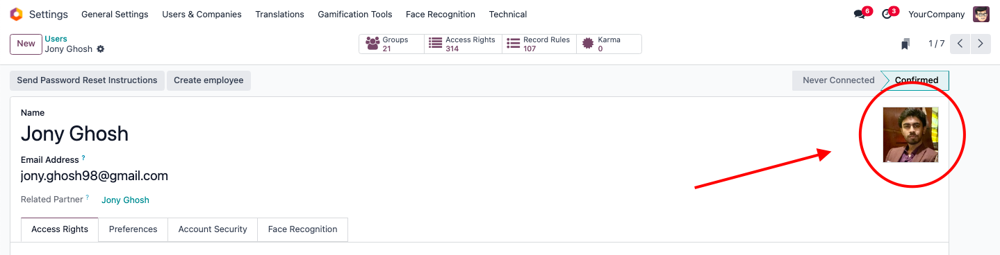
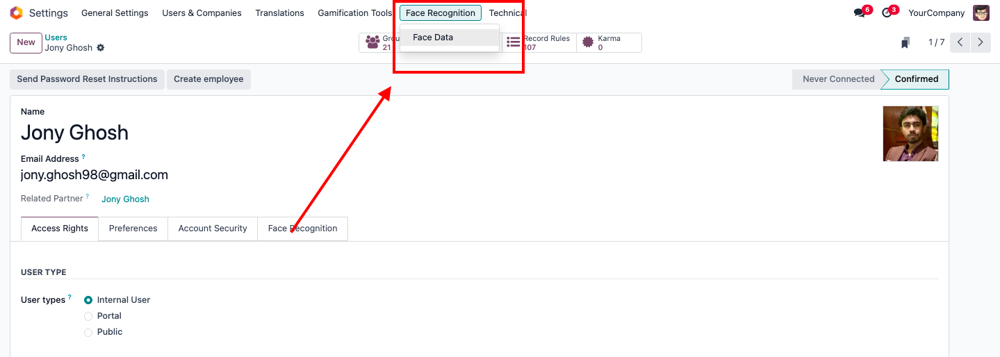
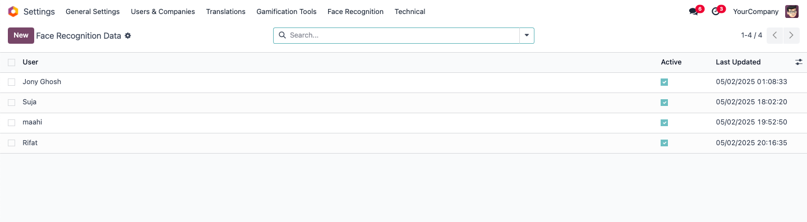
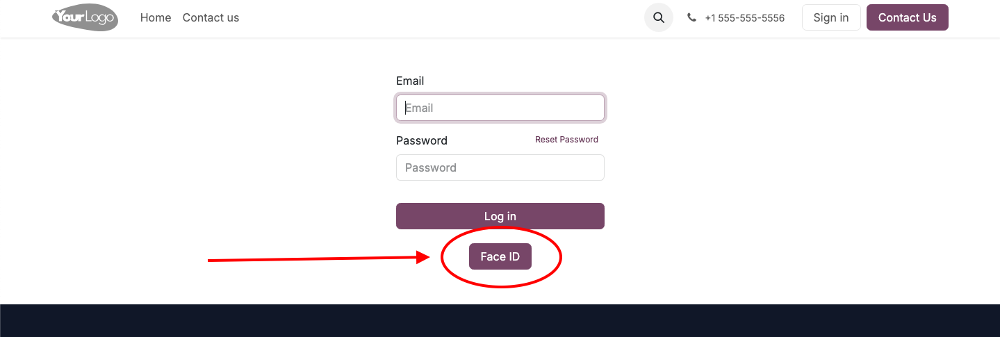
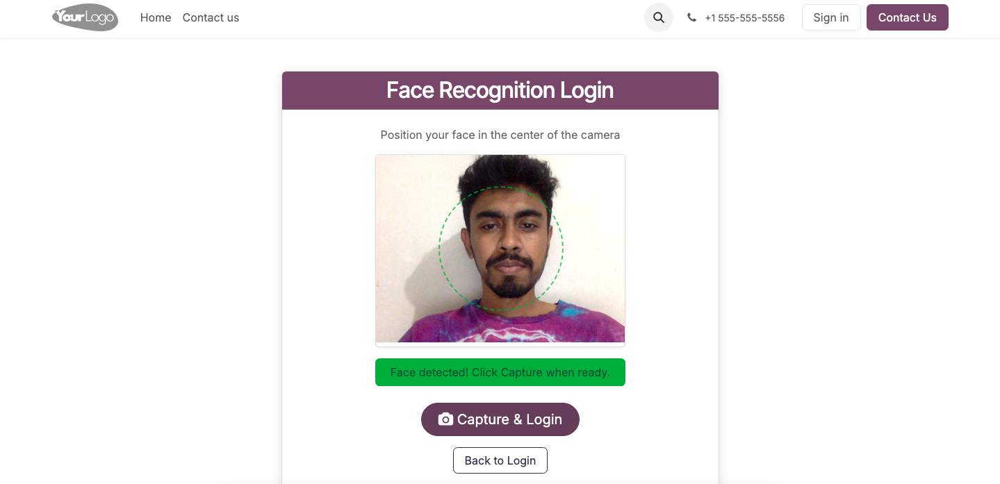
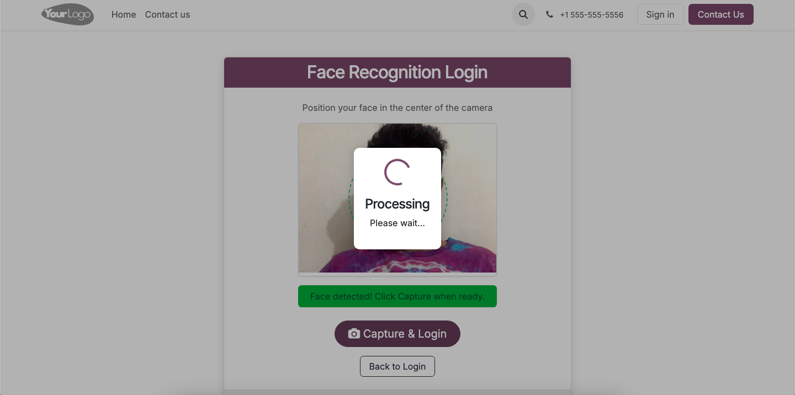
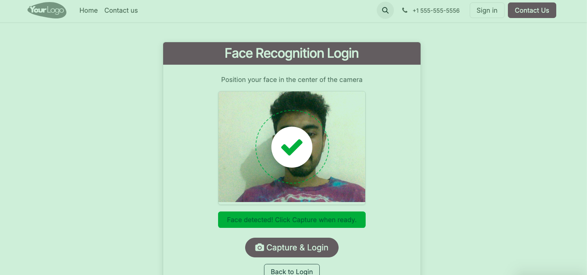
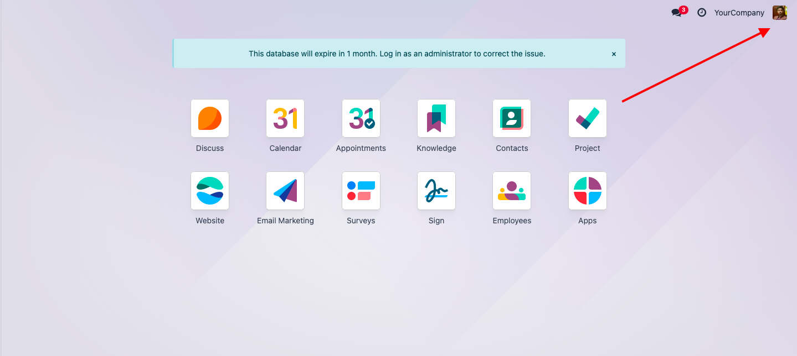

AI Driven Face Recognition Login
This module provides a face recognition login system for Odoo. It uses AI to recognize the user's face and log them in automatically. The module is easy to install and configure, and it works with any camera that is compatible with Odoo. The module is designed to be secure and reliable, ensuring that only authorized users can access the system.
The module is perfect for businesses that want to improve security and streamline the login process. It is also ideal for businesses that have a large number of users and need a quick and efficient way to manage logins. The module is compatible with Odoo 16 and can be easily integrated into any Odoo installation.
Screenshots And Steps to make it work great
1. Install the module from Odoo Apps
2. Go to Settings > Users & Companies > Users
3. Select a user and make sure to upload a photo of the user in the "Image" field.

4. Go to Settings > Face Recognition > Face Data

5. You will find a list view of all the users with their face data. You can also see the face data of the user.
6. If any user is not registered, you can register the user by clicking on the "New" button.

7. In the login page there will be a button "Face ID".

8. It will take you to a new page where you can see the camera view.
9. Click on the "Capture" button to capture your face.

10. It will take you to a new page where you can see the camera view.
11. Click on the "Capture & Login" button to capture your face.

12. If it recognizes your face, there will be green tick mark and it will log you in automatically.

